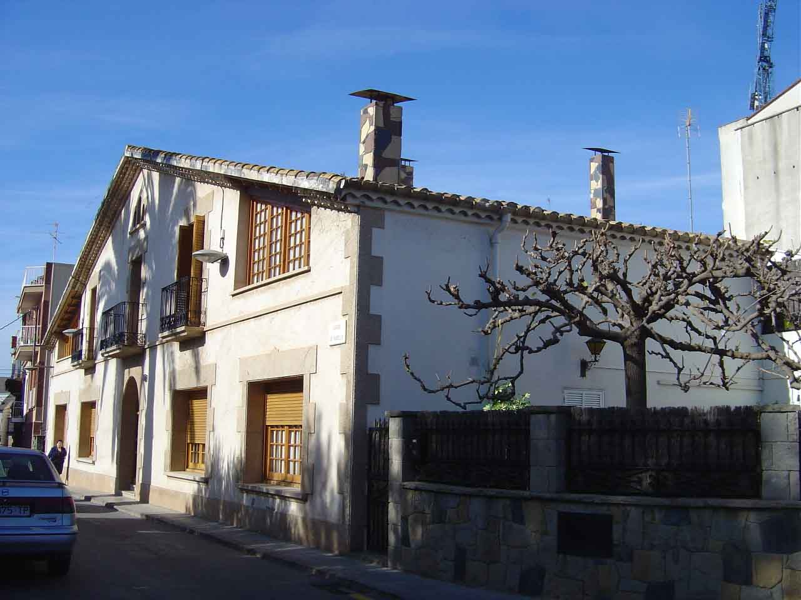
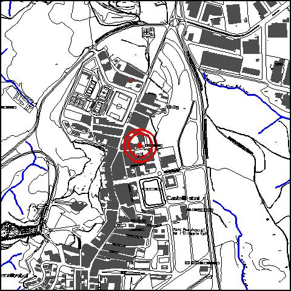

|  |  |
Nom de l’element: Can Rabella
Clau d’identificació: A.21
Nucli o indret: c/ Can Rabella (nucli urbà).
UTM: X=415.056, Y= 4.592.482
Règim del sòl: sòl urbà
1.1. Època de construcció i tipologia:
Edifici datat com a mínim del 1.625. Al segle XVIII era coneguda com a Can Pi. Presenta una torre adjacent amb una veleta dels vents. La coberta és a dues aigües i de teula. La porta d’entrada és de mig punt i presenta planta baixa i planta pis.
1.2. Estat de conservació:
Molt Bo.
1.3. Ús actual:
Habitatge unifamiliar.
1.4. Accés:
Accés a través del c/ Can Rabella número 17, o bé, pel carrer Onze de Setembre.
És un dels edificis més antics del nucli urbà i es troba en bon estat de conservació.
3.1. Usos admesos:
Bihabitatge, residencial, oficines i serveis, recreatiu cultural i social, recreatiu de restauració.
3.2. Condicions d’ordenació:
Segons Pla Especial a redactar.
3.3. Accés i serveis:
Accés a través del c/ Can Rabella número 17, o bé, pel carrer Onze de Setembre.
BPU (Bé Protegit Urbanísticament)